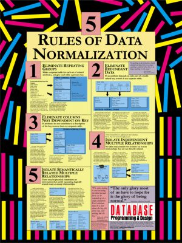

[5th_law__normalization]
back to top...
Normalization is not the normal state of a design, but it is the preferred state.
Normalization is about design, denormalization is about optimization. Peter Becker.
No database should be built without being normalized. Exceptions should be made only when overwhelming evidence lobbies in its favor, and then only when the denormalized table is an extract only and will not be updated.
Normal is over rated, and so is spelling.You want perfection? Go out and buy a spell check, but know this: Spellcheck won't keep you warm at night or love you unconditionaly. I will stick to being abnormal and a bad speller. Makes life more interesting. After all, what fun is there in being normal or perfect? Cristina Marrero.
If a design requires denormalization you should first normalize it, then extract it to a denormalized state.
There are valid reasons to build a denormalized relation; not understanding database normalization theory is not one of them.
The secret of all victory lies in the organization of the non-obvious. Marcus Aurelius.
Database normalization is the process of organizing the fields and tables of a relational database to minimize redundancy. Normalization usually involves dividing large tables into smaller (and less redundant) tables and defining relationships between them. The objective is to isolate data so that additions, deletions, and modifications of a field can be made in just one table and then propagated through the rest of the database using the defined relationships.
Edgar F. Codd, the inventor of the relational model, introduced the concept of normalization and what we now know as the First Normal Form (1NF) in 1970. Codd went on to define the Second Normal Form (2NF) and Third Normal Form (3NF) in 1971, and Codd and Raymond F. Boyce defined the Boyce-Codd Normal Form (BCNF) in 1974. Informally, a relational database table is often described as "normalized" if it is in the Third Normal Form. Most 3NF tables are free of insertion, update, and deletion anomalies.
A standard piece of database design guidance is that the designer should first create a fully normalized design; then selective denormalization can be performed for performance reasons.
A relational database is built on the relational theory developed by E.F. Codd in the 1960's. The relational theory is based on mathematics; set theory. Virtually all modern databases are built in relational databases (RDMS) using relational theory. The reason for this is that the design is robust and ensures data integrity. There are a number of ways you can normalize a design. You can use meta-data (catalog) tables or data constraints for example. Typically, I will use a data constraint on a column if there are only a few values and those values are not expected to change. For example; there might be only two types of order, sell, or buy. In that case, a simple constraint on the column will ensure that the data is constrained and meet the rules of normalization while introducing the minimum of complexity. Conversely, there may be an extended list of fund names, so a meta-data (catalog) table that can be extended is called for.
|